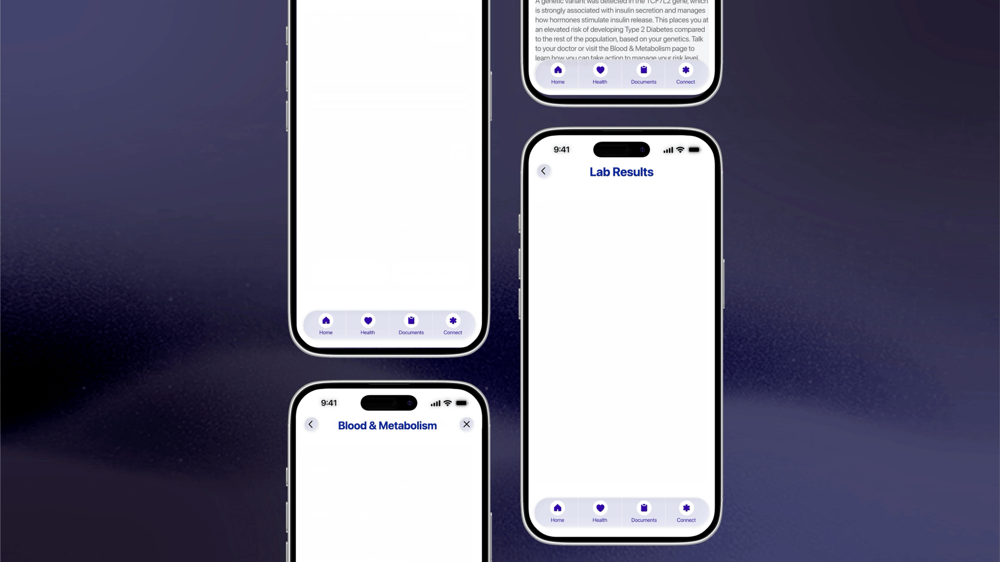

Science communicator turned designer, focused on creating intuitive digital experiences that turn complex ideas and systems into clear, thoughtful, and engaging interactions.

GutCheck: Reducing impluse shopping on Amazon with a friction layer.